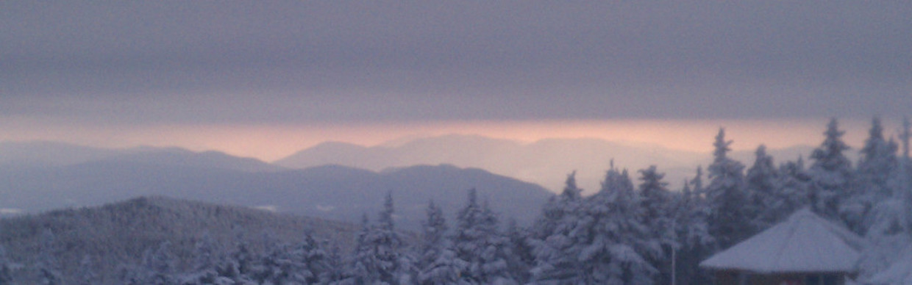
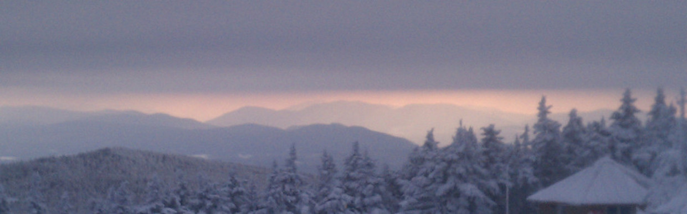

|
Palmetto Area Number Theory Series (PANTS) XVIII September
2012
Wake Forest University, Winston-Salem, NC
Palmetto Area Number Theory Series (PANTS) XIX December
2012
University of South Carolina, Columbia, SC
AMS Spring Western Sectional Meeting April
2013
University of Colorado, Boulder, CO
Algebraic Geometry Northeastern Series (AGNES) April
2013
Yale University, New Haven, CT
Palmetto Area Number Theory Series (PANTS) XX September
2013
Davidson College, Davidson, NC
Palmetto Area Number Theory Series (PANTS) XXI December
2013
Clemson University, Clemson, SC
Arizona Winter School March
2014
University of Arizona, Tucson, AZ
Georgia Algebraic Geometry Symposium October
2014
University of Georgia, Athens, GA
AMS Summer Institute in Algebraic Geometry July 27 - 31
2015
University of Utah, Salt Lake City, UT
Georgia Algebraic Geometry Symposium October
2015
Emory University, Atlanta, GA
| 

 
